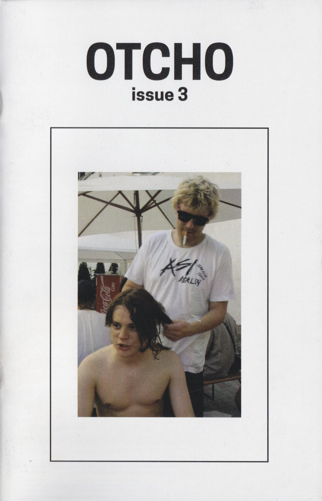
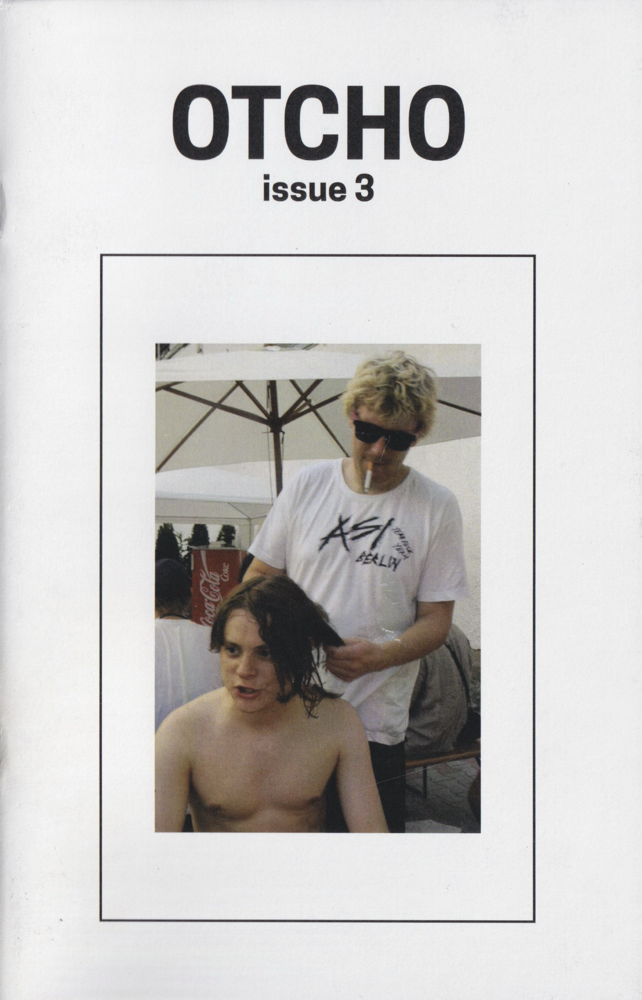

OTCHO is a printed magazine dedicated to the fingerboard scene, initiated by Andrew Hill in 2017. As a relatively young and underground subculture, the fingerboard community has limited published resources. My research methodology includes the collection of oral histories and personal narratives from community members, supplemented by photo documentation at fingerboard events. Given the rapid evolution of online platforms, significant portions of fingerboarding history have been lost. Therefore, the production of serialized, physical documentation is essential for preserving the community’s historical record. To date, OTCHO has published six issues, continuing its mission to chronicle the previously untold history of fingerboarding.

 
